Download the 22RPM App
Free to download from the App Store
The 22RPM app connects your blood pressure monitor to your care team. You only need to download it once.
- Pick up your iPhone and find the App Store.
- Tap the search bar and type: 22RPM
- Tap Get and wait for it to finish.
- Once downloaded, tap Open to launch the app.
Need help? Ask a family member, or email us at info@twentytwohealth.com and we will help you.
Log In to the App
Use the login and password your care team gave you
- Open the 22RPM app. You will see the login screen.
- In the box called Email, Username, or Phone, type the email, username, or phone number your care team gave you.
- Type your password in the box below it.
- Tap the big Login button.
- A box called OTP Verification will ask for a 6-digit code. We send it by email, or by text message if you logged in with your phone number. The box always says “email,” so check your text messages too. Type the code and tap Verify.
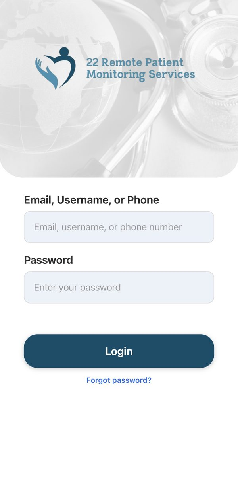
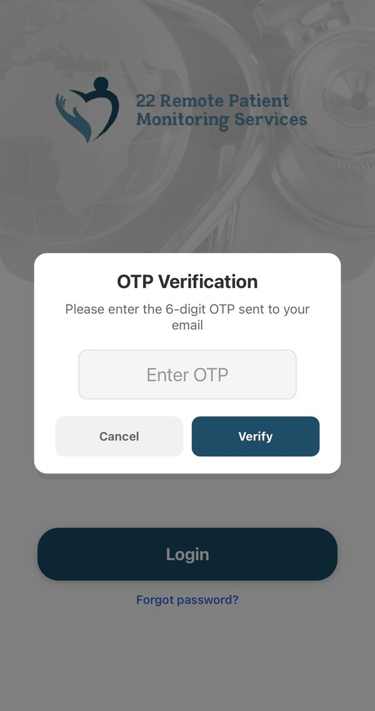
Can't remember your password? Tap “Forgot password?” — the blue words just under the Login button in the picture above — and follow the steps on the screen.
The box always says “sent to your email.” If you logged in with your phone number, the code comes by text message instead. If nothing arrives in your email, check your text messages.
The first time you open the app, before you log in, your iPhone asks if 22 RPM can use Bluetooth. Tap Allow (some iPhones say OK). The app needs Bluetooth to talk to your monitor.
Log in faster next time. Right after you tap Verify, the app asks “Enable Face ID?” Tap Enable. From then on the app opens with a look at your face — no password, and no 6-digit code, every time.
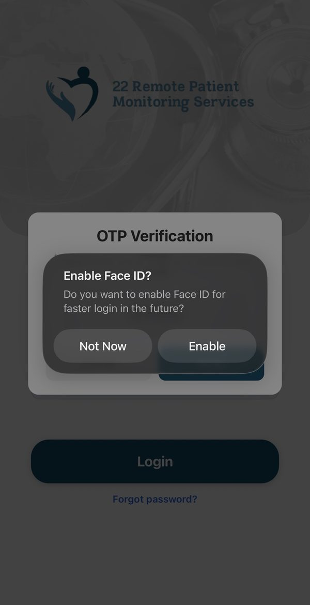
The message says “Enable Face ID?”. It says Face ID even on iPhones with a Home button. Those phones use your fingerprint instead. If it does not work, tap Use Password Instead.
Open Blood Pressure
One tap from your home screen
- After you log in, you will see your home screen. It says Hello and your name at the top.
- Tap the reminder that says “Time for your blood pressure reading today”. Later in the day it says “There's still time to take your blood pressure today.”
- You can also tap the Blood Pressure card below it, under “Today's Readings.”
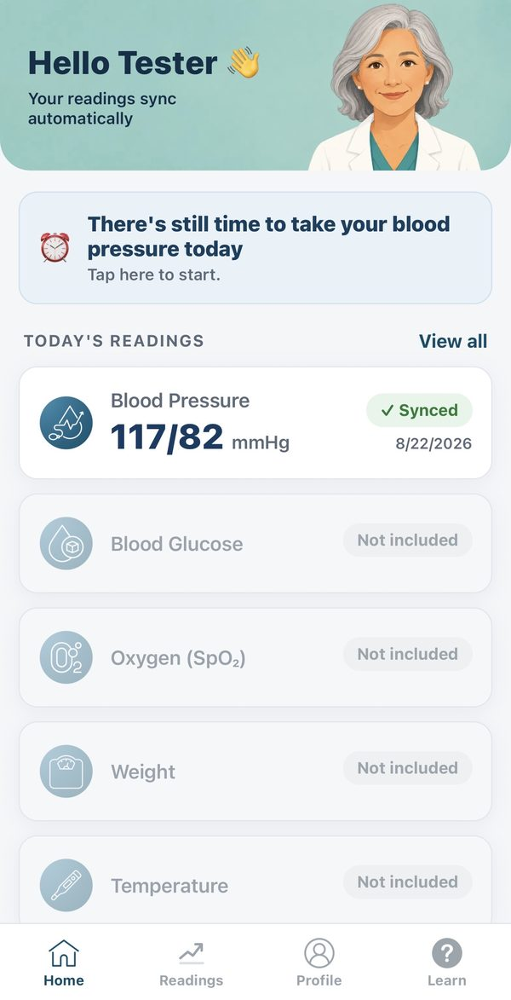
The other cards — Blood Glucose, Oxygen, Weight, Temperature — say “Not included.” That is normal. Your plan is blood pressure.
Connect Your Monitor
You only do this once
- Make sure Bluetooth is turned on on your phone. Go to Settings → Bluetooth, and check the switch is green.
- Press and hold the power button on your monitor until it turns on.
- On the Blood Pressure screen, tap the Connect button at the top.
- A list called Connect to BP Device opens. Tap your monitor. Its name starts with BP2, like BP2A 2803.
- The list closes by itself. A green bar says “Connected. Press Start on the BP machine to take your reading.” You are ready.
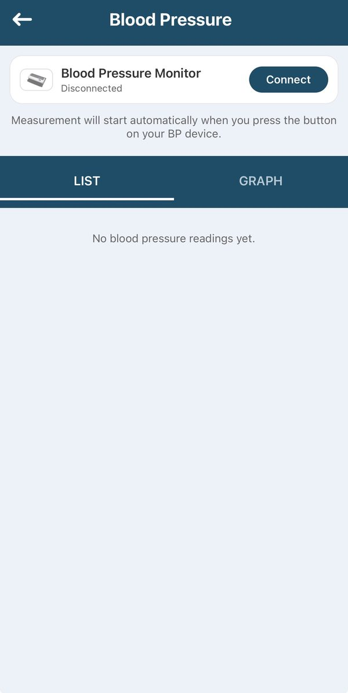
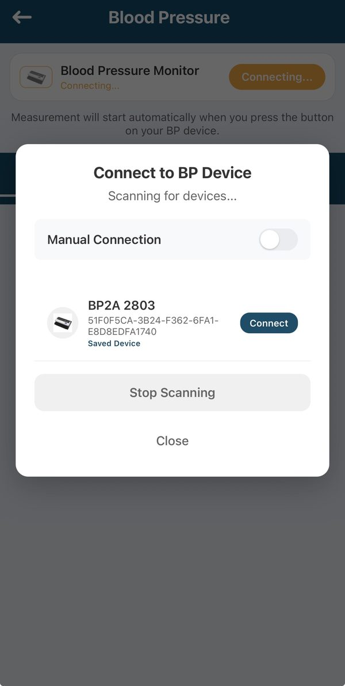
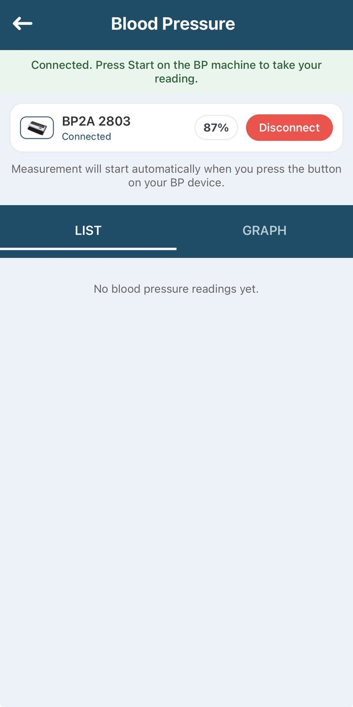
The first time takes about 15 seconds, and that is normal. The button may turn gray and say “Connecting...” while the app looks for your monitor. You may then see “Couldn't connect to the cuff. Check that it's turned on.” Nothing is wrong. Wait a moment, and the list opens by itself. Tap your monitor in the list.
Next time is easier. Turn on your monitor, then open Blood Pressure. The app finds your monitor by itself — it is marked “Saved Device” in the list. You do not need to tap Connect again.
The app talks. You may hear “Device connected” or “Measurement started.” That is normal.
Keep your phone close by — within arm's reach during the reading.
Put On the Arm Cuff
Correct placement gives you an accurate reading
Before putting on the cuff, sit quietly for 5 minutes. Do not drink coffee, smoke, or exercise for 30 minutes before your reading.
During your reading: sit still, breathe normally, and do not talk.
Take Your Reading and Check the Result
Your reading goes straight to your care team
- Press the Start button on your monitor. The cuff will inflate on its own — this is normal.
- Sit still and breathe normally until the cuff deflates, about 30–60 seconds.
- Your reading appears in the app automatically — blood pressure numbers and pulse rate.
A box pops up that says Reading sent, shows your numbers, and says “Shared with your care team.” Tap Done. That box is how you know it worked.
Then your home screen shows “Blood pressure done for today” with the time, and your Blood Pressure card shows your numbers with a green “✓ Synced” mark. You are finished for the day.
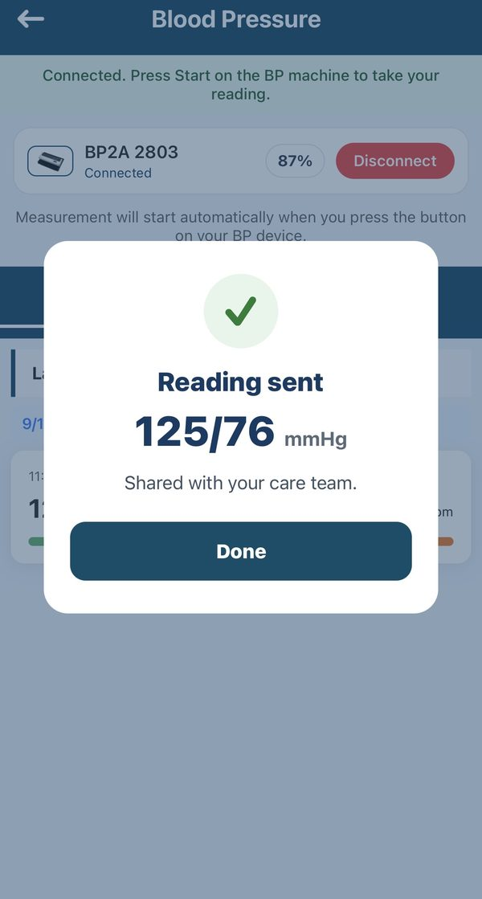
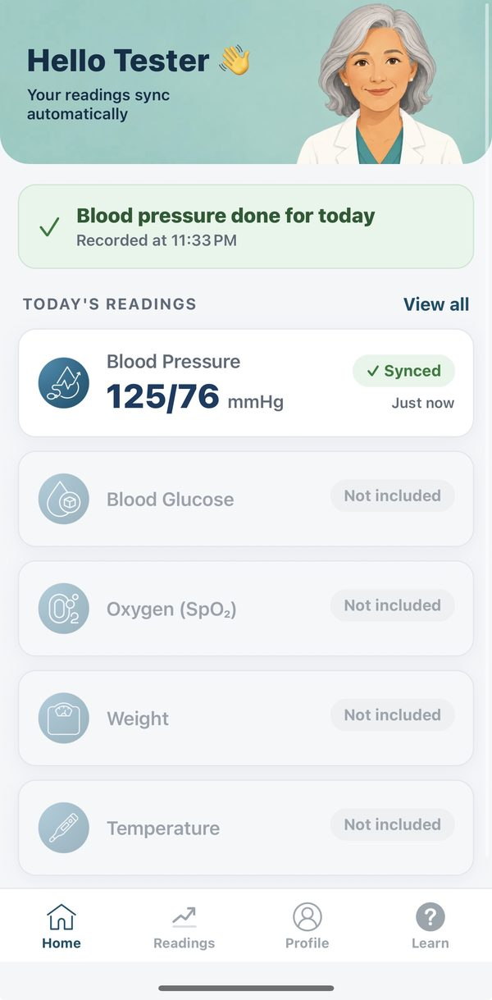
If the box says Reading saved instead, your phone is not online right now. Your reading is safe, and your card shows “↑ Waiting.” It sends by itself when your phone is back on Wi-Fi or cell service. You do not need to take it again.
After the reading, your monitor turns itself off. The app may say “Device disconnected” out loud, and then show “Couldn't connect to the cuff” and the device list again. This is normal and does not mean anything went wrong — your reading is already saved and sent. Tap Close.
That's it. Your reading is done and your care team has received it. You can close the app.
When to take readings: once in the morning before your medications, and once in the evening. Follow your doctor's schedule.
The Four Buttons at the Bottom
Home, Readings, Profile and Learn
You do not need any of these to take a reading. They are there when you want them.
- Readings — every reading you have taken, newest first.
- Learn — short help articles, plus plain-language health information about blood pressure.
- Profile — your name and details, and your medicines. Tap + Add to enter a medicine. You can type the name, or tap “Scan the label instead” and use your phone camera. Your care team checks whatever you add.
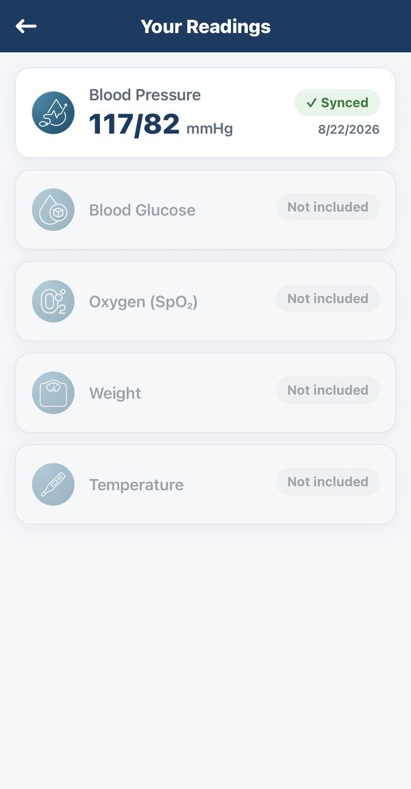
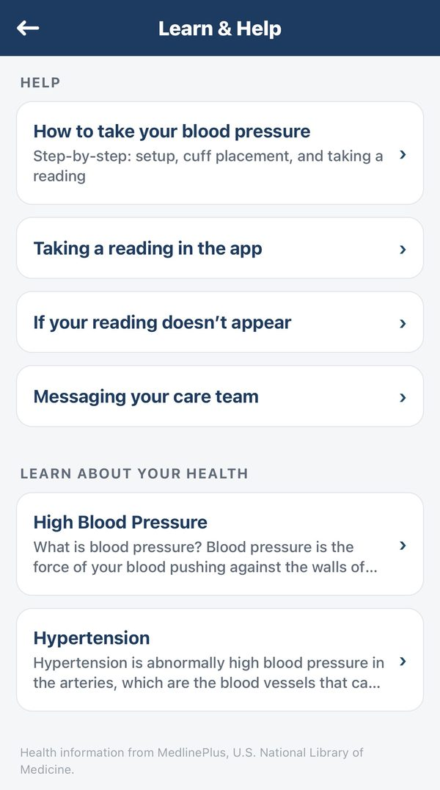
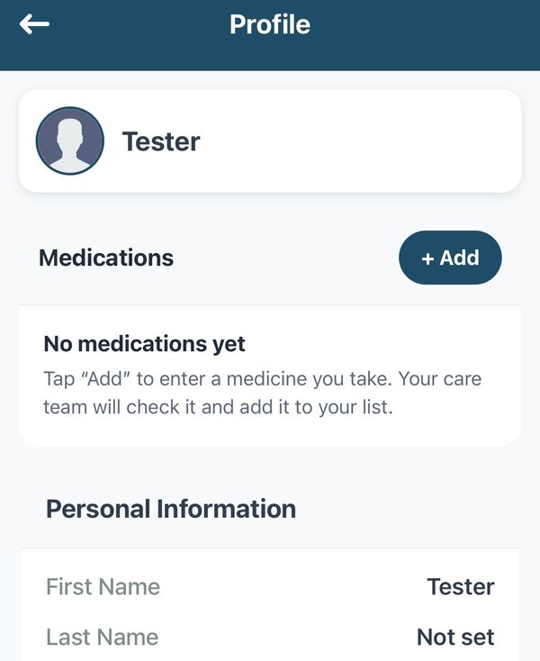
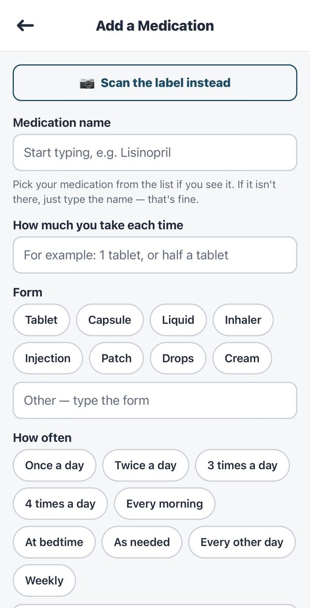
What Do Your Numbers Mean?
Your care team watches these — but here is a simple guide
Blood pressure is two numbers, like 120/78. The top number is systolic (when the heart beats). The bottom number is diastolic (between beats).
| Category | Top number | Bottom number | What it means |
|---|---|---|---|
| Low | Below 90 | or below 60 | This reading is lower than usual. For some people that is normal and causes no problems. Tell your care team if you feel dizzy, lightheaded, faint, weak, sick to your stomach or confused, or if your vision blurs or your heart pounds or flutters. |
| Normal | Below 120 | and below 80 | Great — keep it up. |
| Elevated | 120–129 | and below 80 | A little high — your team will monitor it. |
| High Stage 1 | 130–139 | or 80–89 | Your team may contact you. |
| High Stage 2 | 140 or higher | or 90 or higher | Contact your team soon. |
| Crisis ⚠️ | Over 180 | or over 120 | Call 911 right away. |
Category boundaries follow the American Heart Association.
Call 911 immediately if your reading is over 180/120 and you have symptoms: severe headache, chest pain, trouble breathing, or changes in your vision.
I forgot my username or password. What do I do?
Email your 22RPM care coordinator at info@twentytwohealth.com and they will reset it for you quickly.
My device won't connect. What should I do?
Make sure your monitor is on. Turn Bluetooth off and back on. Go back to the home screen, then open Blood Pressure again. Wait for the list to open, and tap your monitor. If it still will not connect, email us.
Do I need Wi-Fi for my readings to send?
Your phone needs Wi-Fi or cell service to send a reading. On iPhone, if you take a reading without internet, the box says Reading saved and your card shows “↑ Waiting.” It sends by itself once you are back online.
My reading seems very high or low. Should I worry?
Wait 2–3 minutes and take it again. If it is still over 180/120 and you feel unwell, call 911. Otherwise your care team monitors it and will contact you.
How do I know my reading was sent?
a box says Reading sent and “Shared with your care team.” Your home screen then says “Blood pressure done for today,” and the reading shows a green “✓ Synced” mark.
The app said it couldn't connect to the cuff. Did my reading fail?
No. That message is normal twice: the first time you connect, and again after each reading when your monitor turns itself off. If you saw Reading sent, your care team has your reading. Tap Close.
What if I miss a day?
That's okay — just take your reading the next day. Try to take readings at the same times each day for the best results.
We are always here to help you.
If you have any trouble — big or small — please email us. We are happy to walk you through any step.
✉️ Email supportEmail: info@twentytwohealth.com